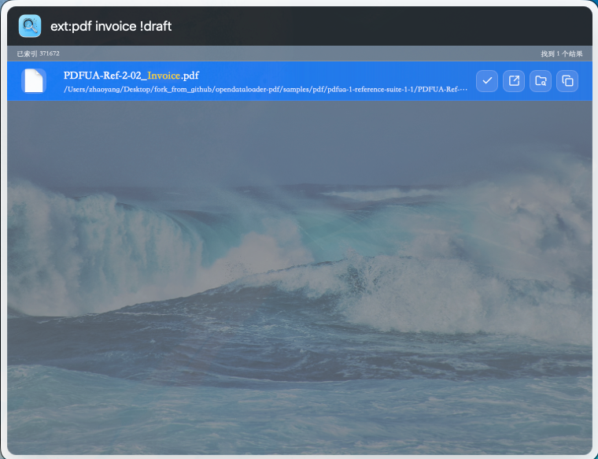
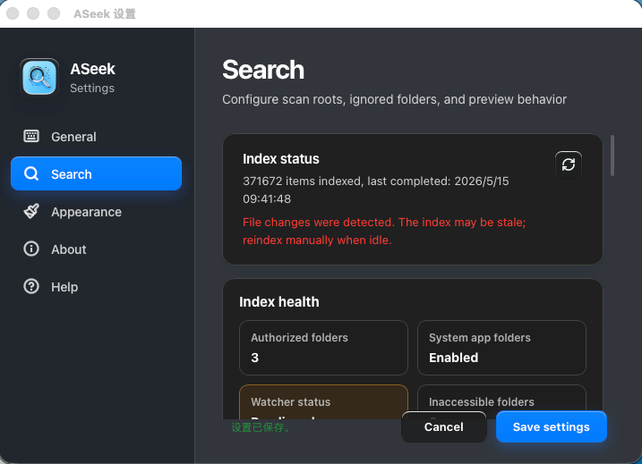
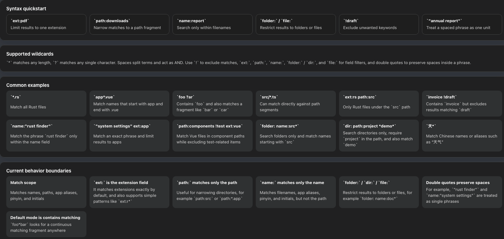

本地文件搜索
为你选择的目录建立本地索引，快速搜索文件、文件夹和应用，索引数据不上传服务器。
ASeek
ASeek 帮你通过一个紧凑的快捷键搜索窗口查找文件、文件夹和应用。 选择需要索引的目录，即可快速搜索，并将文件数据保留在你的 Mac 本机。
无需账号。无云端索引。不上传文件。

ASeek 已通过 App Store 审核，可在 Mac App Store 下载。
为你选择的目录建立本地索引，快速搜索文件、文件夹和应用，索引数据不上传服务器。
通过全局快捷键打开搜索面板，输入关键词后即可用键盘浏览结果并打开文件。
只扫描你主动添加并授权的目录，不需要索引时可以随时从扫描路径中移除。
搜索结果会展示文件信息，并支持预览部分文件，减少打开错误文件的次数。
通过路径和扩展名过滤，快速跳转到代码、配置、文档和项目目录。
无需先打开 Finder，即可查找 PDF、表格、下载文件和最近使用的资料。
在已授权目录中搜索素材、导出文件、截图和交付文档。
文件名、路径、预览和搜索关键词都保留在你的 Mac 本机。
ASeek 在 macOS 上的搜索、设置和高级搜索语法界面。


全局快捷键可在 ASeek 设置中修改。
ASeek 支持类似 Everything 的搜索语法，可直接在搜索框中用条件缩小结果范围。
ext:pdf只看指定扩展名path:downloads把结果限制在某段路径内name:report只在文件名范围内查找folder: file:限定结果类型为目录或文件!draft排除不想看到的关键词"annual report"把带空格的短语视为一个整体
* 匹配任意长度字符，? 匹配任意单个字符，
空格分隔多个条件并按 AND 处理，多个过滤条件可以组合使用。
ext:rs path:src只看 src 路径下的 Rust 文件invoice !draft包含 invoice，但排除 draftpath:components !test ext:vue组件目录下的 Vue 文件，并排除测试相关项folder: name:src*只搜索名称以 src 开头的文件夹不会。ASeek 的索引和搜索都在本机完成，不上传文件名、路径、内容或搜索关键词。
macOS 沙盒要求应用明确获得目录授权。ASeek 只索引你主动添加的目录。
请检查所在目录是否已加入扫描路径、是否被忽略目录规则排除，以及索引是否已经完成。
可以。打开 ASeek 设置，在“通用”中录制新的快捷键。
如需帮助、反馈问题或提出建议，请发送邮件至 cnwxzhaoyang@163.com。